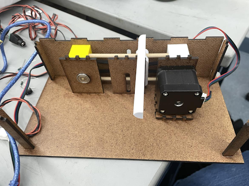
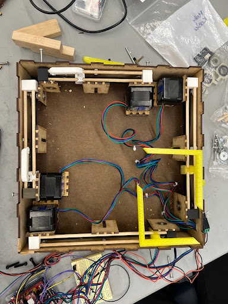
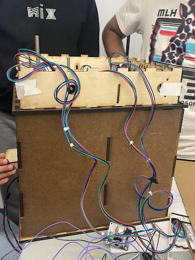

Our Process
Sprint 1
Our project is all about building a Jenga stacker that can do three key things: 1) position Jenga pieces individually, 2) organize them into groups of three, and 3) stack these groups into a tower. For this Sprint, we are focusing on arranging the pieces into groups of three, because this step is extremely mechanical and a crucial step for the project .
On the mechanical side, we made progress by constructing a one-dimensional gantry, which will be the foundation to the design of the pusher. On the electrical front, stepper motors were successfully mounted and connected, and our team is currently in the process of running six stepper motors from an Arduino uno. For software progress, efforts were made to drive the stepper motors using an Arduino microcontroller, marking a significant step forward in the project's development.
Sprint 2
In this sprint’s mechanical update, we made substantial progress with the construction of a mechanism featuring four pushers, all effectively pushing as intended. They will need minor calibration changes in the future, but for now they are all functioning as needed. On the electrical side, four stepper motors were carefully mounted and interconnected. They are controlled by buttons, offering a process for methodical testing of the mechanical systems and precise calibration adjustments for the motors. Lastly, we made progress on the software side as the team successfully drove all four stepper motors with the correct step size. This was an incredibly substantial step, demonstrating an integration of our parts.
Sprint 3
In this sprint, we are on the third step, stacking the pieces into a tower. This is the goal we hope to accomplish for our Demo Day coming up, hence why it is our main focus point. With our upcoming Demo Day, our objective is to showcase a fully operational Jenga stacker capable of autonomously constructing a complete 3x3x16 Jenga tower, with pieces fed sequentially. However, we have made a slight modification. The spinner is no longer a piece we are integrating into our stacker, but more of a sprint goal. During gameplay, the player will be responsible for positioning the pieces at the correct angle, while the machine stacks the tower.
In the recent mechanical update, significant changes were made to the stacking assembly, while new structures and elevator assemblies were successfully created. On the electrical side, we implemented an Arduino Mega, and integrated motors for our elevator. We added eight limit switches to control the stepper motors, and we are now using a DRV8825 driver to run the two elevator motors. Lastly, we are updating the code for the limit switches and elevator. 
Sprint 3.5
This Sprint consists of the progress we made between Sprint 3 and the final Demo Day. During this time, we adjusted details regarding the overall structure of the jenga stacker. We fixed tolerance issues, such as filing and grinding so the structure could fit nicely on top. Another step was diverting from our original plan of using metal dowels to using wood dowels to reduce the friction between the holder and the wood. Additionally, the iteration of the pushers was slightly offset before this Sprint, so we decided to make small adjustments to accommodate for more space. We created access holes for wire management and finalized the assembly, bringing all the changes together for our final product.